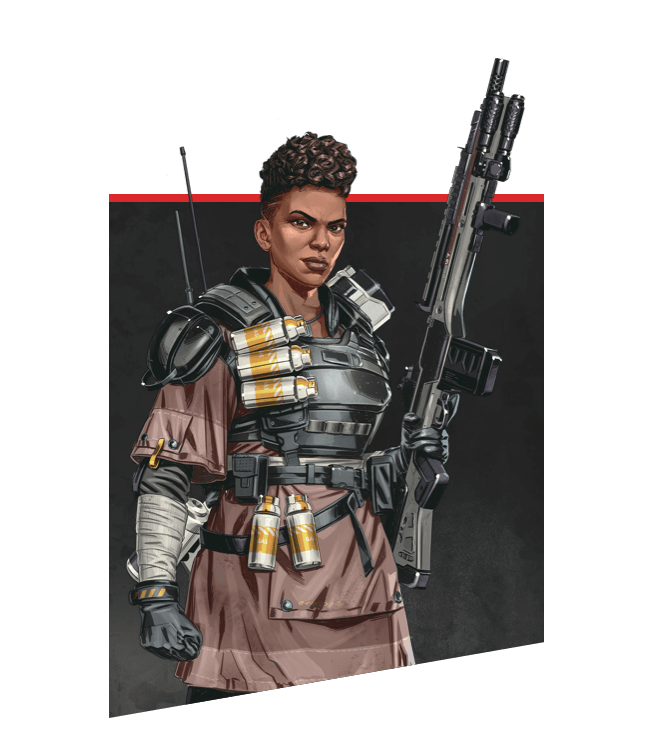
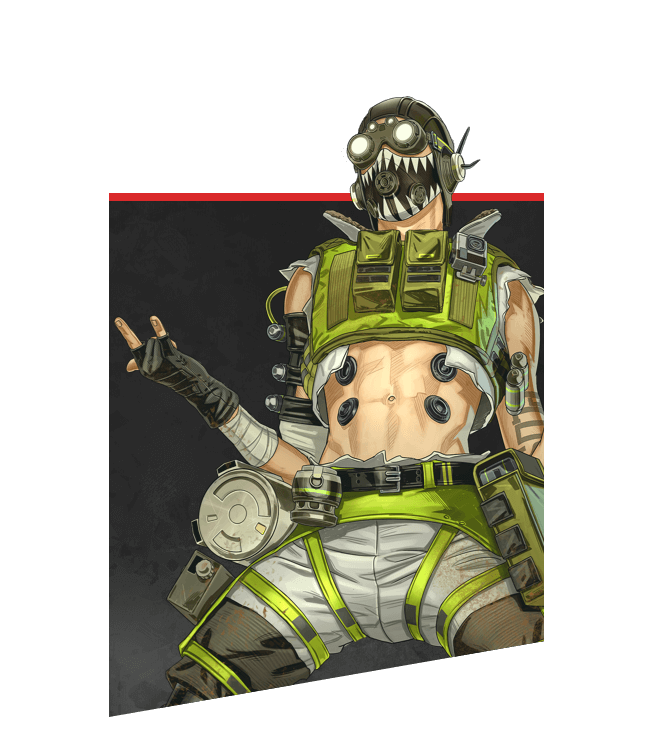

|  |
BANGALOREProfessional SoldierBorn into a military family where she, her parents, and her four older brothers all served with the IMC, Bangalore has been an exceptional soldier her whole life. Dedicated to the IMC cause, she was top of her class at the IMC Military Academy and the only cadet who could take apart a Peacekeeper, equip it with a Precision Choke hop-up, and put it back together in under twenty seconds – blindfolded. In the months following the Battle at Gridiron, the IMS Hestia, with Anita and brother Jackson on board, was attacked by unknown assailants. A bomb on the outer hull blew out a chunk of the ship… but not before Jackson shielded her, sacrificing his own life to save hers. Anita watched helplessly, as Jackson was sucked out into the vacuum of space. After crashing on a Syndicate planet, Anita looked for both work, and the brother she refused to believe had died, so they could begin the decades-long trip back home. Now, she fights to raise money in the Apex Games, in the hopes of finding a pilot willing to take the epic trip back home to reunite with what remains of her family. |
 |
BLOODHOUNDTechnological TrackerBloodhound is known across the Outlands as one of the greatest game hunters the Frontier has ever seen. The child of two engineers stationed at the New Dawn industrial plant on Talos, Bloodhound was taken in by their uncle Artur after a meltdown destroyed the facility and killed both their parents. Artur taught them the Old Ways, a belief system that focuses on the glory of nature and rejects modern technology. Yet Bloodhound was constantly drawn to technological marvels, and ultimately used both new and old methods to take down a Goliath that preyed on the people of their village, forever changing their life’s path. Bloodhound’s unparalleled tracking skills are a boon to any team they join, helping them root out hidden opponents and track enemy movements. Calling on Earth’s Old Norse Gods to guide them, Bloodhound believes that destiny is a path that has already been laid out, eventually carrying all to their death. But with that knowledge comes strength, because until that day comes, Bloodhound knows they can’t be stopped. |
 |
CAUSTICToxic TrapperAlexander Nox used to be one of the brightest scientists in the employ of Humbert Labs, the Frontier’s leading manufacturer of pesticide gases. Nox worked day and night developing new formulas for the glut of pesticides needed to protect the crops that sustained the Outlands. But he soon realized that progress was being hampered by his testing methods. He needed to test on more than just inert tissue: he needed living subjects. As he toiled in secret, Nox began to see the beauty in his creations and their ability to destroy anything they touched. But the head of Humbert Labs soon discovered his gruesome experiments, and their confrontation ended with the lab in flames. Now, competing under the name Caustic, he puts his gaseous creations to work in the Apex Games and observes their effects with great interest. |
 |
CRYPTOSurveillance ExpertCrypto specializes in secrets. A brilliant hacker and encryption expert, he uses aerial drones to spy on his opponents in the Apex Arena without being seen. He also has a secret of his own: his name is Tae Joon Park, and he joined the Apex Games to find the people who framed him for murder. An orphan abandoned at a young age, Tae Joon escaped a life of squalor by becoming a computer engineer for the Mercenary Syndicate, along with his foster sister, Mila Alexander. One day, Tae Joon and Mila stumbled upon an algorithm that could predict the result of any Apex Games match, hidden away in the Games’ own computer systems. That caught the attention of the wrong people - the next day, Mila disappeared, and Tae Joon was forced to into hiding after he was framed for her murder. He’s now joined the Games to clear his name - because sometimes the spotlight is the best place to hide. |
 |
GIBRALTARShielded FortressGibraltar is a gentle giant with a wild side. The son of two SARAS (Search and Rescue Association of Solace) volunteers, he has always been skilled at getting others out of dangerous situations that are common in the Outlands. However, he only began to understand the value of protecting others when he and his boyfriend stole his father’s motorcycle, took it on a joyride, and got trapped by a deadly mudslide. His parents saved them, and his father lost an arm in the process. Gibraltar has never forgotten that sacrifice and has devoted his life to helping those in need. The Apex Games didn’t change that, but they changed what it meant. Many of Gibraltar’s friends and colleagues have competed in the Games for extra money, fame, and glory over the years, and some never came home. Gibraltar joined to keep them safe and, for the first time, his skills as a rescuer and his rebellious nature worked together. He’s now become an icon in the Apex Games, putting himself in the line of fire to protect his squad and send his opponents running for cover. |
 |
HORIZONGravitational ManipulatorAlmost a century ago, the Outlands were dangling on the edge of a cataclysmic energy crisis. Dr. Mary Somers, a charmingly eccentric astrophysicist, was hired to find a solution. Mary moved her family to the scientific research station on Olympus and set to work. With the help of her apprentice, Dr. Reid, Mary discovered Branthium - an element she was convinced could be the key to limitless energy. But Branthium can be found only on the accretion disk of a black hole, so Mary and Dr. Reid departed on a dangerous mission to prove her theory right. Mary promised her son Newton she’d return safe and sound. But Dr. Reid betrayed her, stealing the Branthium and sending her shuttle into the black hole’s orbit. Using her wits, Mary modified her robotic vacuum companion N.E.W.T. to escape. But time moves differently on the outskirts of a black hole, and she was 87 years too late. Now Mary is determined to fund her research to find a way to go back in time and be with her son. She joins the Apex Games as Horizon, master of gravity, just in time for the next season to debut on Olympus--where her old life once was and where she had promised to return. |
 |
LIFELINECombat MedicAjay Che, aka Lifeline, isn’t someone you would expect to find in the Apex Games. The child of wealthy war profiteers, she left home when she learned of the damage her family had caused and enlisted in the Frontier Corps, a humanitarian organization that aids Frontier communities in need. She’s since devoted her life to helping others and joined the Apex Games to fund the Frontier Corps with her winnings. Since no one in the Games is innocent — they all know what they signed up for — and every one of her victories means help for those in need, Lifeline has no problem engaging in the popular bloodsport. Or so she tells herself. She may seem sarcastic and callous, but deep down she wants to help people and make the world a better place. If that means taking a few people down in the process, so be it. |
 |
LOBAHigh Society ThiefWhen Loba was nine, she looked on as simulacrum hitman Revenant killed her family. Left with nothing, Loba survived by picking pockets. As her skills improved, Loba used every tool at her disposal to lift herself from the gutter. Everything changed when she broke into a supposedly impenetrable facility and got her hands on the Jump Drive tech stored inside. With her new teleportation bracelet, the most secure and unattainable items were within her reach. So was her dream of living the high life. Rumors spread across the Outlands: if you wanted something valuable -and well guarded- Loba’s who you go to. She was almost able to put her past behind her. But when Revenant joined the Games, her past catapulted into her future. Desperate to find a way to kill him, she sabotaged a facility full of Revenant bodies, bringing Skull Town and Thunderdome crashing down in the process. However, she learned it was just one of many such factories hidden across the Frontier. Now, she’s joined the Games to find a way to end him for good. It doesn’t hurt that the Arenas are brimming with treasures just waiting to be plucked. Revenge will come, if fortune favors her. In the meantime, some shiny things have caught her eye. |
 |
MIRAGEHolographic TricksterMirage is the kind of guy who likes to stand out. The youngest of four brothers, he perfected the art of fooling around to get attention. The one thing he took seriously was Holo-Pilot technology: introduced to the illusion-creating tech by his engineer mother, he poured over the mechanisms and learned all he could about them. Even when his brothers went MIA during the Frontier War, Mirage and his mother continued to develop holo devices, and the work brought them closer. While working as a bartender to make ends meet, Mirage heard amazing stories from his patrons about the Apex Games and the wealth and glory that came with victory. As good as both of those sounded, he knew he couldn’t risk leaving his mother childless – until she gave him a set of customized holo devices and told him to follow his dream. Mirage is now the life of the Apex Games, outwitting opponents and charming audiences across the Outlands. |
|  |
OCTANEHigh-Speed DaredevilOne day, Octavio Silva was bored. In fact, he was bored most days. Son of the preoccupied CEO of Silva Pharmaceuticals and wanting for nothing in life, he entertained himself by performing death-defying stunts and posting holovids of them for his fans to gawk over. So, this day, he decided to set the course record for a nearby Gauntlet by launching himself across the finish line – using a grenade. As he lay in triage hours later, the doctors informed him that the damage done to his legs meant his daredevil days were over. That didn’t sit well with Octavio, who turned to an old friend for help: Ajay Che, who he guilted into forging an order to replace his legs with bionic ones. Suddenly able to repair his limbs at a moment’s notice, Octavio decided petty online stunts weren’t enough: the ultimate adrenaline rush, the Apex Games, was calling. Now, he’s going to become an Apex Champion doing the most incredible, death-defying moves anyone’s ever seen. Maybe in the arena, he won’t be so bored. |
 |
PATHFINDERForward ScoutPathfinder is the picture of optimism, despite his circumstances. A MRVN (Mobile Robotic Versatile eNtity) modified to specialize in location scouting and surveying, he booted up decades ago in an abandoned warehouse with no idea who created him or why. With only his MRVN designation to hint at his identity, Pathfinder eventually set off in search of his creator. Pathfinder has learned much in his travels since then (like how to make a mean Eastern Leviathan Stew) but hasn’t come any closer to finding his creator. Still, he’s never given up hope, and has joined the Apex Games to gain a following--and hopefully draw the attention of his maker. In the meantime, he remains enthusiastic and helpful, always ready to make new friends (then shoot them). |
 |
RAMPARTQuick-witted ModderRampart is a blue-collar, private business owner who just needs a big gun and a backpack full of scrap metal to get by in the dangerous, wild west world of the Outlands. Before opening her popular modding shop on Gaea, Ramya Parekh (Rampart for short) made a name for herself in the underground gauntlet circuit. Parekh climbed to the top showcasing pure skill using her custom-modded gear. She began taking jobs from smugglers, Syndicate members, and everyone in between. Some say it ain’t great unless it’s got “Rampart” written on it. Parekh never shied away from letting people know how great she was, or better yet, how bad they were. Maybe that’s what led a group of assailants to ambush her at her shop one night. Her business burned down and she was left with nothing -- except an Apex Card. For Parekh, the Apex card is more than just an invitation to compete - it's a sign that she may have lost her shop, but she didn't lose what built it. Like her motto says, she's the kind of person who can always "turn crap into gold.” |
 |
REVENANTSynthetic NightmareRevenant used to be human. He used to be the greatest hitman the Mercenary Syndicate ever had. He used to look in the mirror and see his human face looking back. But time changes everything, and when his programming finally failed, he saw what he had become at the hands of the Mercenary Syndicate and Hammond Robotics: a walking nightmare of steel and vestigial flesh. His masters resurrected him as a simulacrum, snatching him from death’s embrace again and again and programming him to forget. He swore he would hunt down every last person who did this to him, but more than two centuries have passed, and they're all gone… or so he thought. The return of Hammond Robotics to the Outlands has renewed his thirst for vengeance, and he won’t stop until anybody connected to Hammond is dead. Of course, he doesn’t mind eviscerating a few of the Legends along the way. He used to need a reason to kill… but he’s not that man anymore. |
 |
WATTSONStatic DefenderNatalie “Wattson” Paquette is a familiar face in the Apex Games, though for a different reason than most. Daughter of the Games’ lead electrical engineer, she studied his manuals to stay close to him, and discovered her calling at a young age. Though she could be completely distracted one moment and hyper-focused the next, electricity grounded her – its ordered, predictable flow made sense in a way the rest of the world didn’t. She devoured every book she could on the subject, and eventually became such a skilled engineer that she was commissioned to build the Apex Games’ Modified Containment Ring. Unfortunately, her father died the day it was revealed, leaving her alone. At her lowest moment, a group of competitors invited her to return to the arena with them, assuring her she would always have a home. She now fights alongside her friends in the arena she helped build, destroying incoming missiles, recharging shields, creating fences, and using her pylon to silence fights that get too loud. Nobody knows the arena better than Wattson – anyone who underestimates her is in for a shock. |
 |
WRAITHInterdimensional SkirmisherWraith is a whirlwind fighter, able to execute deadly attacks and manipulate spacetime by opening rifts in the fabric of reality — but those abilities came at a price. Years ago, she woke up in an IMC detention facility with no memory of who she was. Senior Science Pilot Renee Blasey, who volunteered as guinea pig for her own experiments... whose partner betrayed her and locked her away… no longer existed. All that was left was a timid girl, frightened by a cacophony of voices in her head, until another version of herself appeared and taught her to listen to the voices. Following her lead, Wraith found the strength to break free from her prison and escape into a different reality - this reality. Finally free, but still robbed of her memories, Wraith continues her quest to learn more about who she was before the experiments. With so many of the Apex Games held on old IMC bases, Wraith now competes so she can access the mysterious facilities and learn more about who she was. She remains a fixture of the Apex Games, and with every match she gets closer to the truth... |
 Apex Legends Tournament
Apex Legends Tournament